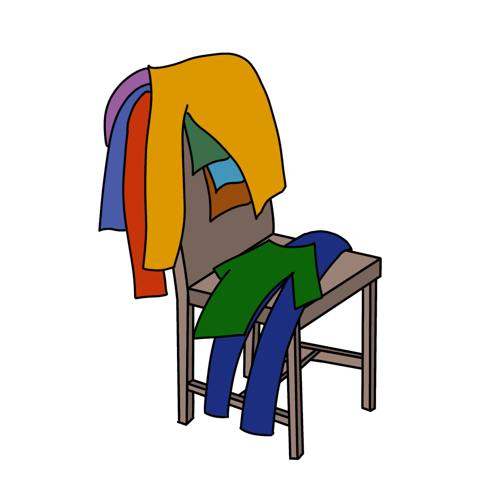
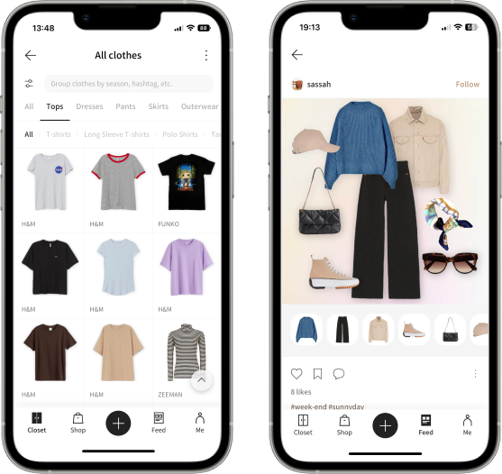
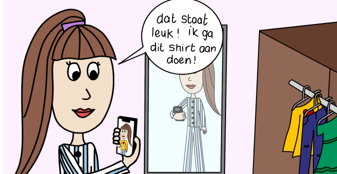
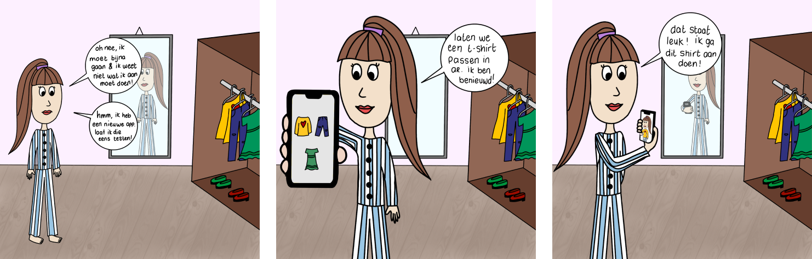
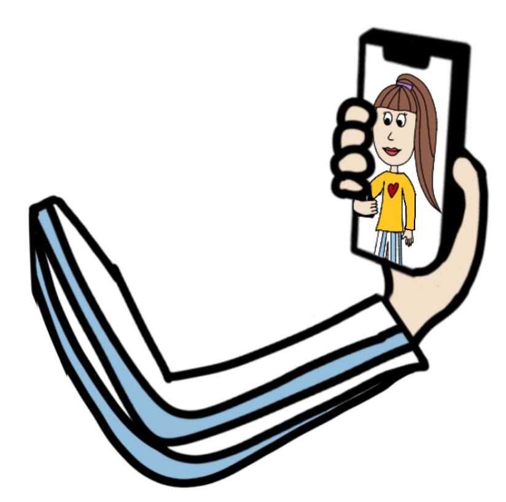
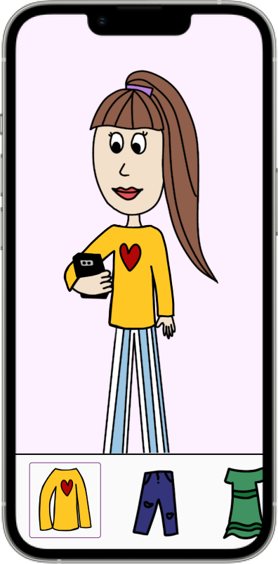
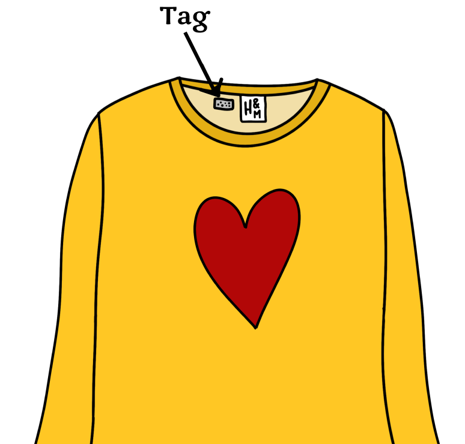
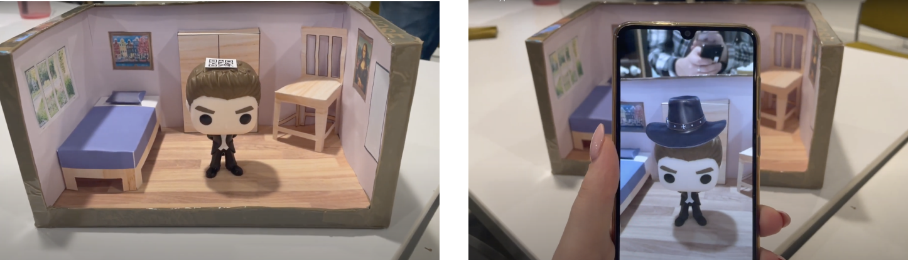

Projects
Project: Extended Reality
Focus: New Tech/Conceptual thinking
"How can I assist the user in quickly and easily finding an outfit through the use of augmented reality?"
Introduction
How often do you wake up in the morning and have no idea what to wear? You need to make a decision soon because you don't have much time. You still haven't made up your mind as there are many clothes spread out across your room.
Choosing an outfit might be challenging for some people. There are too many choices, and once you make a choice, you can never be sure of how it will actually turn out. The objective is to come up with a concept that will enable us to help these people. Individuals who struggle to choose an outfit and be content with it. They prefer to see an outfit beforehand because it is tough for them to mentally picture it. Additionally, it is not feasible to fit every piece of clothing because it takes a lot of time.
Claudia has been approached in order to obtain a more detailed picture of the target audience. More than once a week, Claudia encounters this problem and offers insight into its negative aspects.
The Problem
Some people have difficulty finding the right outfits. You have too many clothing options, and it's difficult to picture the outfit in your head. This causes a great deal of anxiety.
I discovered that some people spend a lot of effort selecting their outfits for the day during my conversation with Claudia. She told me that choosing an outfit can take up to an hour. Sometimes she imagined an outfit to appear better in her mind than it did in reality. Additionally, it causes her a great deal of stress, which she dislikes. Additionally, Claudia admitted to me that she occasionally worries about being too late for work due to not having the right outfit.
There are more outfits that need to be fitted, and often there isn't enough time to fold them properly afterward. The well-known "clothing chair" emerges, which just adds to the worry. Additionally, it could be challenging to find a particular piece of clothing. There is no way to identify the object you might be looking for.
Last but not least, a more broad concern. I'm talking about the subculture we live in now. Individuals purchasing apparel may not always realize what they truly require. They only use these clothing items once or twice before discarding them. Resulting in an increase in CO2 output, which is harmful to the environment. The target audience wants help, they want to quickly and simply pick an outfit so they don't have to buy new things so often.
Context
Current Solutions
Without assistance
As soon as they wake up, they rummage through their wardrobes to see what they can find. In search of the ideal outfit, they try on several items. While some people may fold the items later and put them back in the closet, others don't have the time and leave them lying around the room.
Acloset
This software lets you upload all of your clothing items. After that, you can arrange these using a variety of filters, including occasion and outfit type. Once that is finished, you will have a clear picture of all the clothing you are owning. With this application, you can also make outfits by selecting clothing items and arranging them in a photo collage. In a photograph, it appears somewhat different from how you would actually perceive it in real life. Locating the item in your house can also still be challenging. Is it in the laundry or the closet?
Target Audience
The target demographic is made up of people who find it difficult to put together an outfit. People who find it enjoyable to be engaged in "fashion" and pay attention to their appearance. Although they enjoy creating outfits, they occasionally find it difficult to put them into practice.
As a result, they take their time choosing the right clothing for the day. Stress arises from people having to rapidly fit into multiple clothing. Sometimes they don't have enough time to correctly fold them again, so they have to iron them once more. Despite everything, this target demographic appreciates having the appropriate outfit and will go to any lengths to find it.
Research
Bias
A current state of AR and AI research is being conducted. Unfortunately, there are still improvement possibilities in marked areas. It has been discovered through research that some AR applications contribute to "Whitewashing". Fortunately, there are steps put in place to remove bias from these systems. Another thing is also the "beauty standard" that has been standardly added to some AR filters.
Disposability Culture
We currently live in a disposability culture. In this culture, many people purchase items that they only wear once or twice. And after deciding it is no longer interesting, they discard it. The environment will not benefit from this. Being able to find many outfits by simply trying on your own clothes may make you more motivated to buy fewer new items.
RFID tags
There are many tags that can be used to track clothes according to research. The business Napking is a pioneer in this field. You can use this to check whether clothes are accessible to wear or not. You can track the clothing items to see if they are in your closet or in. the laundry room. These trackers' level of specificity is not described here yet, but I believe it will become evident in the future years.
Interview
I spoke with Claudia, a fashion enthusiast who was experiencing problems choosing an outfit. She revealed in her interview a critical fact: she occasionally has trouble visualizing clothing. As a result, she must fit everything. This research also provided a crucial new understanding. She typically has a lot of time pressure and has to fit many items. She has to straighten her clothes numerous times a week and leaves clothing all over the place.
Vision
Design Challenge
"How can I assist the user in quickly and easily finding an outfit through the use of augmented reality?"
Future Scenario
The future for these people will become a lot more manageable if this vision becomes real. They can choose an outfit more quickly and don't need to iron clothing multiple times. They can find outfits more easily and don't need to fit every outfit in real life. The target group will have fewer anxieties and be able to commute easily to work or university.
Due to their tendency to "forget" which items they already have, they will buy fewer clothing items. This is better for the environment as well. They can fit items faster and create outfits easies through our platform. Additionally, the RFID tags will make it easier for users to locate their clothing. This allows them to quickly determine whether they can wear the item at that moment.
Concept
An application that allows you to try on clothing in augmented reality.
With this concept, users can try on clothes in augmented reality. They can combine their virtual wardrobe with their physical one. In the future retailers sell unique RFID clothing tags. The tags can be easily attached to your physical items. The special RFID code can then be added to the virtual one. Use the application to find a particular item in your home.
You have now built a digital wardrobe and linked digital and physical objects together. It is now possible to begin the project's enjoyable (and practical) part. Select an item from your virtual wardrobe by navigating through the application. Then, you can point your phone's camera at a mirror, where it can detect you. The application will then add the clothing piece to your body if you look at your phone. Find the ideal outfit by switching out the items.
Important is to understand that the virtual item will be placed over the clothing items that you are wearing in the real world. The application will not alter your body to avoid using filters that can alter your real body. Your body's composition cannot be accurately known by the application. We want to let the AR projection be as accurate as possible to show how the item will be in the physical world.
Why is this valuable? The main benefit of using AR is that it actually allows you to see how this can look in real life. Creating an image collage or a mood board is often not enough to show how this will truly look. AR can bring this idea to the next level and be valuable for the target audience.
Elements
Augmented Reality in screen
Walk around your virtual closet and click on various items. The camera may identify you by pointing your phone, for example, at a mirror. Next, you can see on the phone how you'd appear to be wearing that outfit. The clothing is projected over the clothing that you are already wearing. Combine various clothing items to create the ideal look for the day!
Application on smartphone
Install the app on your smartphone. Search through clothing libraries to find the items you have in your closet. Use the app to connect, tag every piece of clothing, and locate them. Sort clothing by various filters, such as "theme" or "season." The options for clothes are now more limited, making your decision easier. The app displays only options that are currently available and keeps track of which products are currently in the laundry.
Tags for clothing items
Place unique tags in your clothing to track them down. You can get these tags from any retailer in your area. You can easily place them into an item without damaging them. The tags are waterproof and easily connectable to the items in your virtual closet. Next, you can specify in the app where the laundry room and wardrobe are. The app can then filter available clothing.
Prototype
I have created a prototype of the component that allows you to project your clothing on a person. I did this with a cowboy hat because there weren't any (free) assets from an apparel item. A hat will be visible on the smartphone once the QR code on the physical doll has been read. This provides a brief illustration of this concept's idea.
Conclusion
I believe that this idea is a good starting point for a future platform. There are undoubtedly still areas that need to be addressed with greater care. Additionally, there will likely be many other themes, such as bias. Hopefully, these points will be developed further in the future, and the platform is suitable for everyone to use.
Different design ideas, such as "AR onboarding takes time," are addressed in this subject. In light of this, I believe it is wise to allow the user to use their smartphone. Something that they are quite familiar with. They can download the application and browse through clothing libraries to find the right items. They can then add the tags to the application. Very easy and understandable for the user. The fitting of clothing in AR is possibly a smaller step than you might imagine. Almost everyone is familiar with Snapchat filters. You will particularly apply this concept when you are at home and be aware of your physical surroundings. Users can use the concept in a safe way. "Encourage situational awareness"
I'm intrigued by what this idea might become in the future. It seems like a valuable idea for a group of people who currently don't have a substitute for this issue. Certainly, with a little more time and research, this may yet be a useful product.